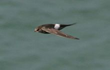
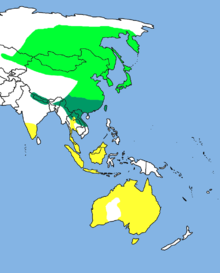
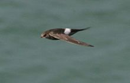
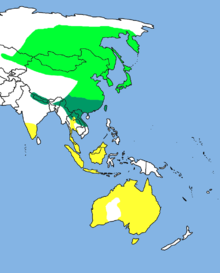

| Pacific Swift | |
|---|---|
|  | |
| Conservation status | |
| Binomial name | |
| Apus pacificus (Latham, 1802) |
|
|  | |
| Distribution of Apus pacificus. Resident range: Dark Green; Breeding range: Lighter Green; Migrant: Yellow. |
| Pacific Swift | |
|---|---|
|  | |
| Conservation status | |
| Binomial name | |
| Apus pacificus (Latham, 1802) |
|
|  | |
| Distribution of Apus pacificus. Resident range: Dark Green; Breeding range: Lighter Green; Migrant: Yellow. |
The Pacific Swift (Apus pacificus), or Fork-tailed Swift, is a small bird, superficially similar to a House Martin. It is, however, completely unrelated to those passerine species, since swifts are in the order Apodiformes. The resemblances between the groups are due to convergent evolution reflecting similar life styles.
These birds have very short legs which they use only for clinging to vertical surfaces. The scientific name comes from the Greek απους, apous, meaning "without feet". They never settle voluntarily on the ground. Pacific Swifts spend most of their lives in the air, living on the insects they catch in their beaks.
Pacific Swifts breeds from central Siberia eastwards through Asia. This species is migratory, wintering south to Australia. It is a rare vagrant in western Europe, but has been recorded as far west as Norway and Great Britain.
These swifts build their nests on cliffs, laying 2-3 eggs. A swift will return to the same site year after year, rebuilding its nest when necessary.
Pacific Swifts are similar in size to Common Swift, and they are black except for a white rump. They can be distinguished from a partially leucistic Common Swift by the deeper tail fork, longer wings, bigger head and larger white throat patch.

{kind=link}
{kind=link}